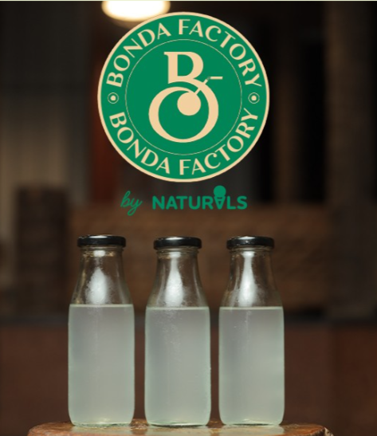
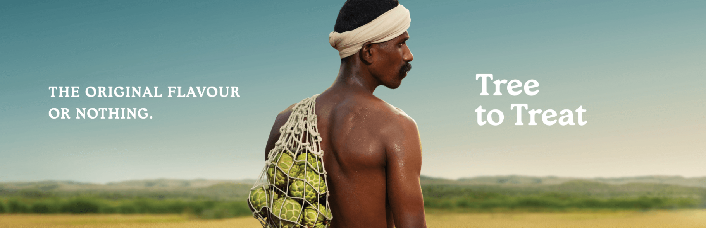
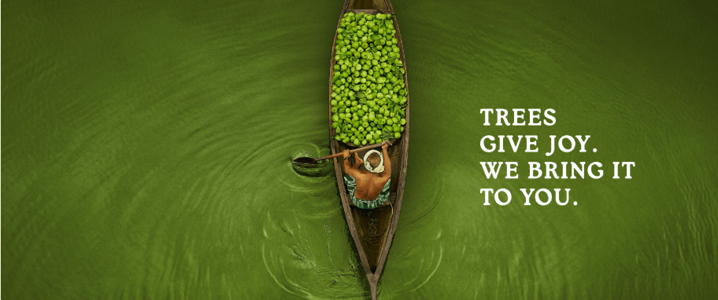
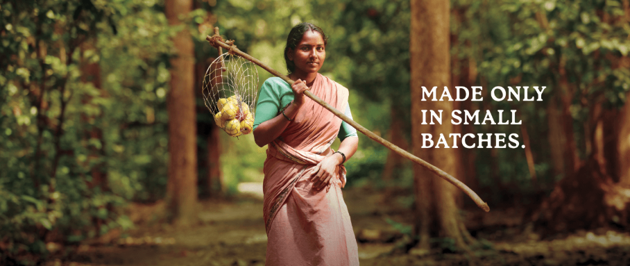
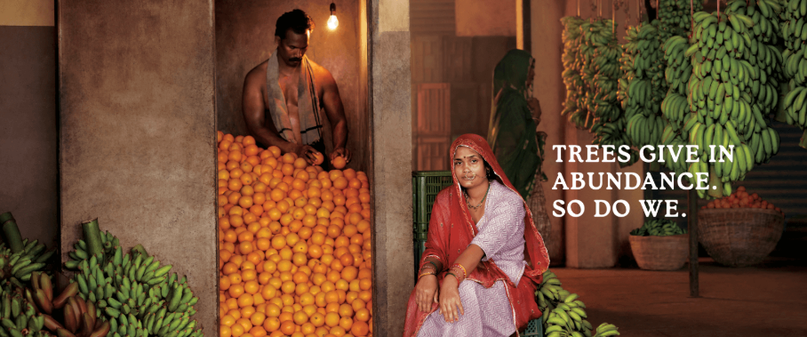
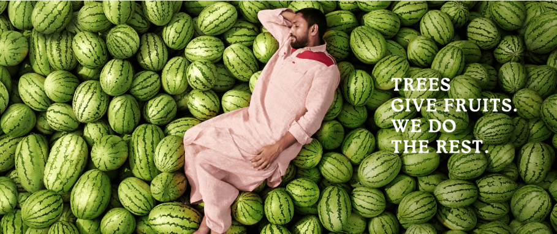
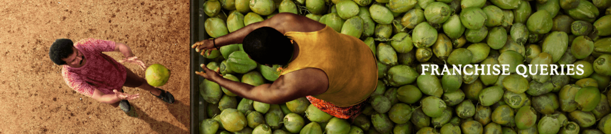

*This is only a brand name and does not represent its true nature.

-Late Shri Raghunandan Srinivas Kamath,Founder,Natural Ice Cream





The milk that goes into Naturals ice cream comes from the same vendor for over four decades now. This makes our ice creams rich, creamy and most importantly, consistent
Fruit is in the DNA of Naturals Ice Cream. It’s what makes our ice creams unique and original. We go to great lengths to source fresh fruits only from their most popular locations.
We use pharma sugar, which is so fine and pure that it’s certified to be used even in medicines. Because we make sure only the best makes its way into our scoops.

In the sizzling streets of 1984 Mumbai, amid the tantalizing scent of Pav Bhaji and scorching sun, a young visionary named Mr. Raghunandan Srinivas Kamath embarked on a daring journey. Little did he know that his simple idea would transform into an exhilarating Indian sensation – Naturals Ice Cream, making him the pioneer of handcrafted icecream from quintessential fruit-based flavors such as Sitaphal, Tender Coconut, Jackfruit, Muskmelon and Kala Jamun, amongst many more.